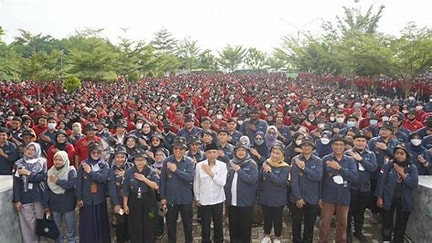
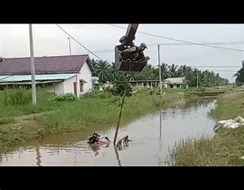

PEMBEKALAN MAHASISWA KKN

Pada tanggal 2 Januari 2025, Institut Teknologi Sumatera (ITERA) resmi melepas mahasiswa untuk mengikuti Kuliah Kerja Nyata (KKN) di berbagai daerah. Program ini bertujuan untuk memberikan pengalaman langsung kepada mahasiswa dalam menerapkan ilmu yang telah dipelajari di bangku perkuliahan ke masyarakat.
Dalam acara pelepasan tersebut, para mahasiswa mendapatkan pengarahan dari dosen dan pihak institusi mengenai pentingnya peran mereka dalam pengabdian kepada masyarakat. KKN ini diharapkan dapat memberikan dampak positif, baik bagi mahasiswa maupun masyarakat setempat.
Workshop Pemrograman untuk Mahasiswa Baru

Sebuah video yang memperlihatkan seorang mahasiswa Kuliah Kerja Nyata (KKN) dari Institut Teknologi Sumatera (ITERA) jatuh ke sungai saat mengendarai motor Viar menjadi viral di media sosial. Kejadian ini terjadi pada tanggal 2 Januari 2025 di salah satu lokasi KKN yang sedang berlangsung.
Menurut saksi di tempat kejadian, mahasiswa tersebut kehilangan kendali saat melewati jalan licin di dekat sungai, yang mengakibatkan motornya tergelincir dan terjatuh. Beruntung, mahasiswa tersebut berhasil selamat tanpa cedera serius setelah dibantu oleh rekan-rekannya..